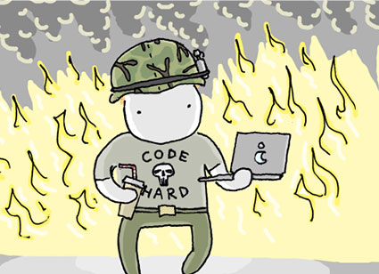
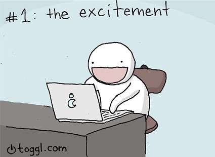
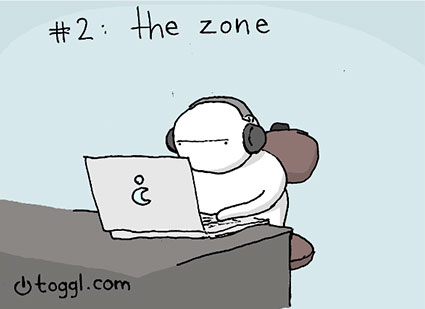
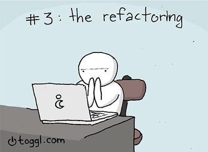
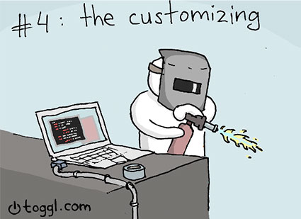
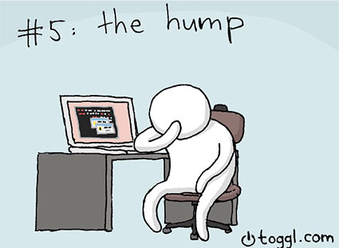
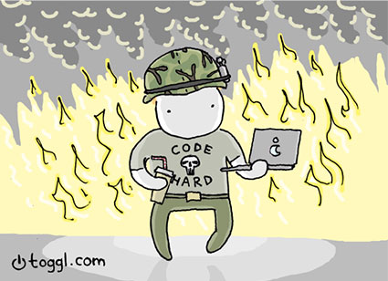

Being a developer is hard. I'm not saying other jobs are easy, but being in the sofware
business demands a pretty solid effort.
In this blog post I'll describe some of the situations that I find myself in and that are probably way too familiar
for many of the developers out there.

1. When you get excited
Just like a cowboy in a western your fingers start itching and you just get that buzz going. You
know that whatever else you have planned will be ditched. Sooner or later you will drop everything and start
coding the thing you are excited about. Most of the time it's a good thing. It's like a drop of nitro inside the feul tank.
You are really focused and stuff gets done fast. Sometimes though, you get excited about things that aren't a priority and that's when
it's much more difficult to satisfy your curiosity about the problem.

2. When you get in the zone
As the Zuckerberg character in the movie "Social Network" said when Justin Timberlake tried to greet the hackers: "Don't bother greeting, they are
in the zone." Sometimes you just get the ball rolling so fast that everything else becomes a blip on the horizon. You have postponed your lunch for hours
and your eyeballs are turning yellow because you just haven't been able to take a minute to visit the restroom. You just code, and with every code execution
and every error you feel like the solution is just around the corner. "If I just fix this error, then I can commit and take a break". For me this can
go on for a full workday. In the evening I find myself hungry and tired, but mostly happy because I have slayed yet another bug monster or climbed another feature
mountain.

1. When you refactor
From time to time you have an epiphany. You find some new technology or a better way of doing something. Eagerly you feel like this is exactly what needs to be done to
make the code faster, cleaner and more optimized. Pumped up, you dig into it hard. Many times this does not end well, though. That doesn't matter that the ideas was bad.
But the thought that this is just a minor adjustment goes out of the window, when a week in to the refactoring you find out one of two things:
- this is too big a piece of cake to eat with one go, or
- this just isn't working out with the current codebase.
Sometimes, however it works out, and it really does all the things you imagined it would - and for all those times it's totally worth it.

1. When you make custom things
Creating a custom bit of software is generally not considered a good idea, because updates to the main libraries are almost certain to break it.
But even if you decide there aren't going to be custom elements in the software, sooner or later there will be. It's just because of the fact that cool things aren't
built in the main library. Is it my fault that Cocoa doesn't have popups that shoot fireballs (and that we need it because the designers sold the idea to the product lead)?

1. When you finish where you started
There are not my favourite days. Actually they can drag on for some time. There are the days where you're working on something new or on some nasty bug. Whatever it is,
it's just something you can't put your finger on. You dig around the internet, read the docs and try to find anything that could give you an idea on how to proceed. When the
day ends, you might leave with nothing to show for your work.
You've cracked the code for a whole day and tried several different versions. In the end, however, your commit count is around zero and the lines of useful code written is about the same.
When you finally get that Eureka moment, you feel incredibly relieved. Most of the time, the solution is really elegant and simple, and it makes you wonder why didn't you think of it straight.

6. There are no easy things
The famous saying we use here at Toggle is "How hard can it be?!". When something seems simple, it's probably quite hard to execute. Last such thing I remember was my acquaintance with Constraints
in Cocoa. We needed to change the constraints of certain elements at runtime. It seemed quite easy, if we click here we change the constraints. But what I didn't know was that the documentation for constraints
was quite vague and there were few examples floating around the internet. Anyway, with good old trial and error method I got it working, but this simple thing wasn't definitely as simple as it seemed at first glance.